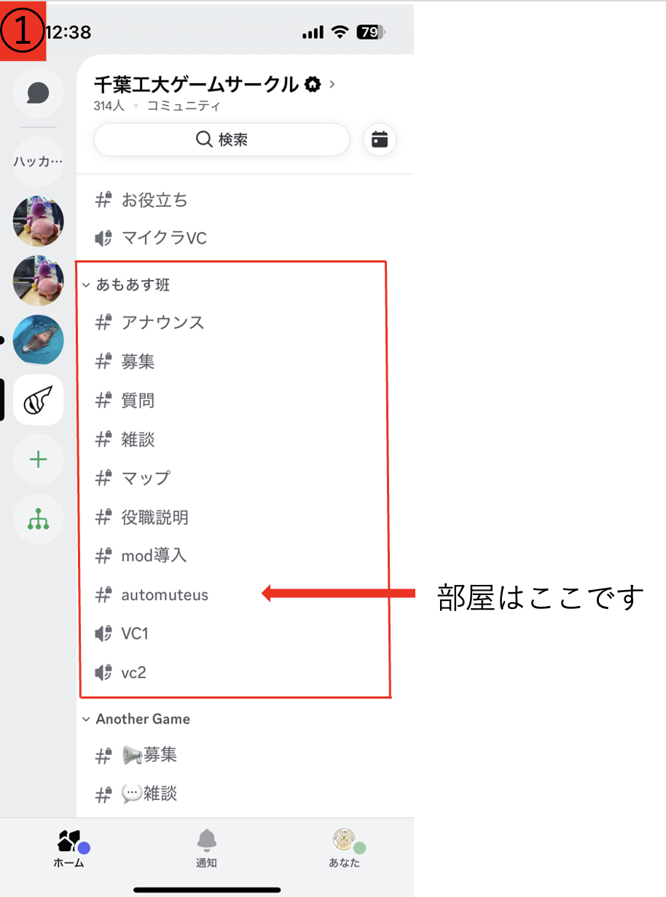

ゲームサークルあもあす班のみなさんこんにちは．あさあさです
ここではCITゲームサークル生向けにAutoMuteUsというBotとAmongUsCapture(以下，Capture)というソフトウェアを用いて部屋募集する方法と，できた部屋への入り方を解説します．
AmongUsはみなさん楽しんでいますか？とても楽しいゲームですが，オンラインでやるときは手動でミュートしたり死亡したら霊界チャットに移動しなきゃいけなかったり面倒ですよね．
そんな面倒な作業を自動でやってくれるBotがあります！それがAutoMuteUsです．読んで字の通り，このBotはゲームが始まったら参加者をミュート状態にして，会議とタスクで生者チャットと霊界チャットを切り替えてくれます．このサイトではそんなAutoMuteUsの使い方をご紹介します．
このBotはすでにDiscordに招待されているため新しくなにか導入する必要はありません．
AutoMuteUsを使用するには本来サーバ内での権限が必要になりますが，現在(2025年5月)の状態ではすべてのユーザがBot機能の使用が可能になっています．この設定は今後変わる可能性がありますが，とりあえず今はみんな使えます．もしサーバ内での権限を要求された場合は，ちょっと奥の方まで踏み込んでいる可能性があるので手順を確認しましょう．
実際のゲーム内の状況をBotに伝えるために橋渡しとなるソフトウェアを こちら からインストールします．

上記のGithubからCaptureの最新版のzipファイルをダウンロードし，解凍しましょう．
回答したファイルを実行すると，「NETが見つからなかった！」というメッセージが現れ，ダウンロード画面になります．画面の誘導に従い，.NET 5.0.17をインストールしましょう．
ここまでの手順でCaptureをインストールできたら準備完了です．さっそくホストとして部屋を立ててみましょう.
ここからはDiscordで操作します．VCに入った状態で，任意のテキストチャンネルに"/new"と入力します．(一応「automuteus」チャンネルがあるのでそこに入れましょう)

コマンドを入力すると上の写真のようなコメントがBotから送られます．この状態は「BotとCaptureがまだ連携できてないよ」ということです．同期するためには，赤枠で囲ってある"here"をクリックしましょう．ブラウザーが起動し，画面にでっかく"AutoMuteUs"のロゴが出てきたら成功です．
(このロゴが画面いっぱいに表示されます．)
Discordに写真のような表示が出てこない場合，以下の点に注意しましょう．
URLをクリックしてもcaptureが起動しない場合，Captureがデスクトップにないことが原因と考えられます．ダウンロードに置きっぱなしの場合は場所を移動させましょう．
それでもだめな場合はおそらくPCのセキュリティソフトが阻害している可能性があります．この場合は手動で起動させましょう．単純にダブルクリックすれば起動できます．Captureはネットからインストールしたソフトウェアなので，セキュリティソフトが反応してしまうことがあります．
同期がうまく行けば，上の写真の赤枠のように緑丸がつきます．PCのスペックによっては数秒ラグがあるのでちょっと待ちましょう．
この状態でAmongUsを起動し，ゲーム内で部屋を立ててみましょう！ここまでうまく行っていれば，最初にDiscordに送られたコメントが下の写真のように変化します．

これで部屋募集は完了です！
CaptureがBotと同期しても，ゲーム内容が反映されない(部屋を立てても何も起こらない)ときは，手順をもう一度踏んでもいいですが手動で部屋情報を書き込むこともできますし早いです．

上図の赤枠の場所をクリックすると，ホスト名とルームコードを入力する欄が出てきます．ホスト名はAmongUs内で使用している名前を入力しましょう．
ここからはホストではなく，参加者としてゲームを遊ぶ人向けの説明になります．
部屋が立てられたら"automuteus"のテキストチャンネルに入りましょう．
AutoMuteUsのコメントを確認したら，ルームコードをゲーム内で入力して部屋に参加しましょう．初めて参加する場合は名前が"Unlinked"になっているので，下にある"Select your in-game color"から自分の色を選択してBotと連携しましょう．
以上で説明は終わりになります．Botに限らずパソコンで色々するのは難しいですよね．何かわからないことがあったら，ぜひ気軽に質問してください．良きあもあすライフを！